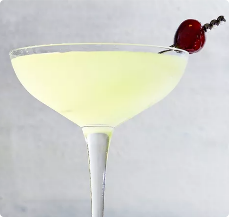

The Last World Cocktail
A Gin-based prohibition-era cocktail with unprohibited enjoyments
Ingredients
| What You'll Need |
How Much |
| London Dry Gin |
5/6oz (25ml) |
| Chartreuse |
5/6oz (25ml) |
| Maraschino liqueur |
5/6oz (25ml) |
| Lime juice |
5/6oz (25ml) |
| Crushed Iced |
As desired |

The last word cocktail is a classic that offers an amazing taste anyone can appreciate. The recipe is simple and the flavor is complex, often surprising drinkers as to how well it works. It's definitely an enlightening gin martini and one that everyone who values fine cocktails should taste at least once because it's an experience you will not forget.According to Ted Saucier's 1951 book, "Bottoms Up," it's believed that the last word was developed during Prohibition at the Detroit Athletic Club. It is arguably one of the better drinks to come out of the nationwide "drought" when spirits were either hard to find or of the inferior "bathtub" quality. It has stood the test of time and is a spectacular drink that continues to receive a well-deserved spotlight on many modern cocktail menus. It's also one of the most sophisticated green cocktails you'll find.
Description
-
Pour all of the ingredients into a cocktail shaker starting with the cheapest ingredients first (the lime juice).
- Shake all of the ingredients with ice
- Strain into a chilled Nick and Nora glass and you're done!
- Garnish with lime wheel or brandied cherry.
- Enjoy without prohibition!